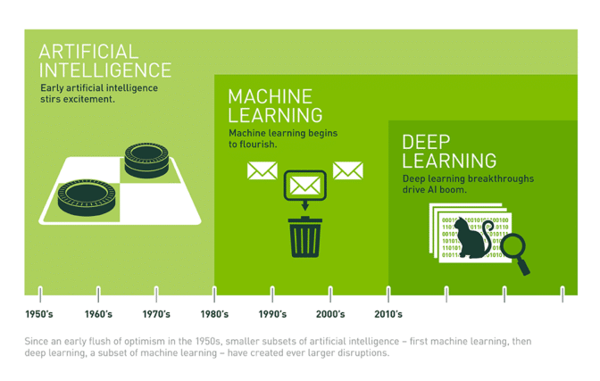

2 Introdução
Neste primeiro capítulo, vamos mergulhar em alguns aspectos fundamentais para adentrarmos ao mundo da Ciência de Dados.
Antes de colocarmos a mão na massa com o R e o RStudio nos próximos capítulos, é importante entendermos o que está por trás dessa área. Vamos explorar alguns conceitos principais, como inteligência artificial e aprendizado de máquina, e explorar os diferentes papéis e caminhos que uma carreira em dados pode oferecer. Ao final, você terá uma base sólida para dar os primeiros passos e se preparar para a jornada prática que nos aguarda.
2.1 O que é ciência de dados?
A Ciência de Dados é uma área interdisciplinar que utiliza métodos científicos, processos e algoritmos para extrair conhecimento e padrões de dados, tanto estruturados (organizados em planilhas) quanto não estruturados (imagens, sons, sites, etc.). Em essência, é a combinação de estatística, programação e conhecimento de domínio para solucionar problemas e guiar a tomada de decisões.
O trabalho de um cientista de dados abrange todo o ciclo de vida dos dados, desde a coleta e a limpeza, passando pela análise exploratória e a modelagem, até a comunicação dos resultados. Essa jornada pode envolver a busca por dados em bases públicas (como as do IBGE), a participação em competições (como no Kaggle) ou a utilização de repositórios colaborativos (como a Base dos Dados).
Dentro da área, existem diferentes carreiras:
Cientista de Dados: Foca na análise e na modelagem de dados para extrair informações, usando conhecimentos de estatística e algoritmos de machine learning.
Engenheiro de Dados: Responsável por construir e manter a infraestrutura (bancos de dados, pipelines) que permite que os dados sejam coletados, processados e acessados de forma eficiente.
Analista de Dados: Focado em explorar e visualizar dados para responder a perguntas de negócio, geralmente usando ferramentas como o Power BI ou o Tableau.
2.2 Inteligência Artificial, Aprendizado de Máquina e Aprendizado Profundo
Esses termos são frequentemente usados de forma intercambiável, mas têm significados distintos. Para sermos mais precisos, cada termo a seguir engloba o próximo termo como um subconjunto:
Inteligência Artificial (IA): O conceito mais amplo. É a ciência de criar máquinas ou programas que podem simular a inteligência humana, resolvendo problemas, tomando decisões e interagindo com o ambiente.
Aprendizado de Máquina (Machine Learning - ML): Um subcampo da IA. Trata-se da construção de modelos que aprendem padrões a partir de dados, sem serem explicitamente programados para cada tarefa. Em vez de seguir um conjunto de regras fixas, o modelo aprende e se ajusta com base nos exemplos que recebe.
Aprendizado Profundo (Deep Learning - DL): Um subcampo do ML. Utiliza redes neurais artificiais com múltiplas camadas (por isso o “profundo”) para analisar dados. É especialmente eficaz em tarefas complexas, como reconhecimento de imagem e processamento de linguagem natural.

2.3 O que é aprendizado de máquina?
O Aprendizado de Máquina (em inglês Machine Learning, ML) é a capacidade de um sistema computacional aprender e melhorar a partir da experiência, ou seja, a partir dos dados. Ao invés de escrever regras manuais e inflexíveis para cada situação, você “treina” um modelo para que ele descubra e generalize os padrões presentes nos dados.
Imagine que você quer criar um filtro de spam para e-mails. A abordagem clássica seria escrever uma regra: “Se o e-mail contiver as palavras ‘ganhar dinheiro’, ‘milionário’ e ‘clique aqui’, marque-o como spam”. A abordagem de machine learning é diferente: você alimenta o modelo com milhares de e-mails já classificados como “spam” ou “não spam” e deixa que ele aprenda quais características são mais importantes para fazer essa distinção. O modelo pode descobrir padrões muito mais sutis e complexos que um humano não conseguiria definir em regras.
2.3.1 Por que o ML é importante?
O machine learning impulsiona muitas das tecnologias que usamos diariamente, como:
Sistemas de recomendação: A Netflix sugere filmes e o Spotify recomenda músicas baseados no que você já consumiu.
Detecção de fraude: Bancos usam modelos de ML para identificar transações suspeitas em tempo real.
Carros autônomos: Veículos que usam ML para reconhecer objetos, pedestres e sinais de trânsito, tomando decisões instantâneas.
Avanços científicos: O AlphaFold 2, por exemplo, usou aprendizado profundo para prever a estrutura de proteínas com uma precisão incrível, acelerando a pesquisa em biologia e medicina.
2.3.2 Tipos de Aprendizado de Máquina
Aprendizado Supervisionado: O modelo aprende a partir de dados que já possuem um “rótulo” ou “resposta” correta. O objetivo é prever essa resposta para novos dados. É o caso do filtro de spam, onde você sabe quais e-mails são spam e quais não são.
Aprendizado Não Supervisionado: O modelo trabalha com dados que não têm rótulos. O objetivo é encontrar padrões e estruturas ocultas. Um exemplo é a segmentação de clientes, onde você agrupa clientes com comportamentos parecidos, sem saber de antemão qual é o “grupo” correto.
Aprendizado Semi-Supervisionado: Uma combinação dos dois anteriores. O modelo usa um conjunto pequeno de dados rotulados e um grande conjunto de dados não rotulados para aprender padrões. Útil quando rotular dados é caro ou demorado.
Aprendizado por Reforço: O modelo aprende através de tentativa e erro, interagindo com um ambiente para maximizar uma recompensa. É a técnica por trás de robôs que aprendem a andar ou de sistemas de IA que jogam xadrez.
2.3.3 Boas práticas para a carreira de Ciência de Dados
Para quem está começando, algumas atitudes podem fazer toda a diferença no mercado de trabalho:
Olhe os requisitos das vagas: Analise as descrições de vagas de ciência de dados para entender quais são as habilidades mais demandadas, como linguagens de programação (R ou Python), conhecimento de SQL, ferramentas de visualização e frameworks de machine learning.
Crie e mantenha um portfólio no GitHub: O GitHub é essencial para cientistas de dados. Crie um perfil e use-o para mostrar projetos pessoais, códigos e análises. Ter um portfólio demonstra suas habilidades na prática, muito além do que um currículo pode dizer.
Mantenha seu LinkedIn atualizado: O LinkedIn é a principal rede para conexões profissionais. Mantenha seu perfil completo, compartilhe seu portfólio, publique artigos ou insights sobre a área e conecte-se com outros profissionais para construir sua rede de contatos.